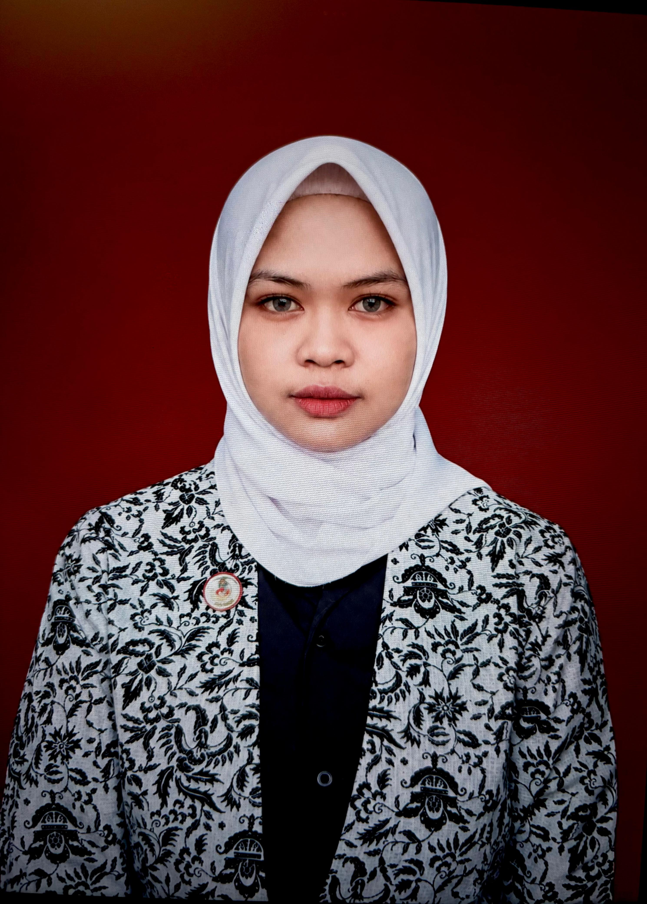

Ramah dan Peduli
Mengutamakan komunikasi yang sopan, ramah, dan memperhatikan kebutuhan setiap pengunjung.
Bidan Hilda hadir untuk membantu masyarakat mendapatkan informasi layanan pemeriksaan kesehatan dan konsultasi, khususnya yang berkaitan dengan kesehatan ibu dan anak.
Kami mengutamakan komunikasi yang ramah, informasi yang mudah dipahami, serta konfirmasi layanan sebelum kunjungan.

Home Care & Home Service
Bidan Hilda merupakan brand layanan home care dan home service yang menyediakan informasi mengenai pemeriksaan kesehatan serta konsultasi bagi masyarakat, khususnya terkait kesehatan ibu dan anak.
Website ini dibuat untuk memudahkan pengunjung mengenali pilihan layanan, membaca informasi awal, dan menghubungi kami untuk menanyakan biaya, persiapan, serta ketersediaan jadwal layanan.
Setiap layanan perlu dikonfirmasi terlebih dahulu agar pengunjung memperoleh informasi yang sesuai dengan kebutuhan dan jenis layanan yang tersedia.
Jelajahi Layanan →Kami ingin membantu pengunjung mendapatkan informasi layanan kesehatan yang mudah dipahami sebelum melakukan pemesanan atau konsultasi.
Mengutamakan komunikasi yang sopan, ramah, dan memperhatikan kebutuhan setiap pengunjung.
Menyediakan informasi layanan agar pengunjung lebih mudah memahami pilihan yang tersedia.
Membantu pengunjung menanyakan pilihan home service, area kunjungan, dan jadwal sebelum membuat janji.
Temukan informasi pemeriksaan dan konsultasi sesuai kebutuhan Anda dan keluarga.
Informasi perawatan dan kebutuhan kesehatan bayi baru lahir bersama tenaga kesehatan.
Detail Layanan →Informasi konsultasi kehamilan dan persiapan yang dapat ditanyakan kepada bidan.
Detail Layanan →Informasi layanan pemeriksaan gula darah dan cara menanyakan persiapannya.
Detail Layanan →Kenali informasi awal mengenai pemeriksaan kolesterol dan konfirmasi layanan.
Detail Layanan →Informasi konsultasi dan kebutuhan kesehatan ibu serta anak.
Detail Layanan →Berikut langkah umum untuk mengetahui informasi dan mengajukan pemesanan layanan.
Cari informasi mengenai pemeriksaan atau konsultasi yang sesuai dengan kebutuhan.
Tanyakan biaya, persiapan, area layanan, dan ketersediaan jadwal melalui WhatsApp.
Pastikan jadwal dan detail layanan telah dikonfirmasi sebelum kunjungan dilakukan.
Kami siap membantu Anda mendapatkan informasi mengenai pilihan layanan dan jadwal yang tersedia.